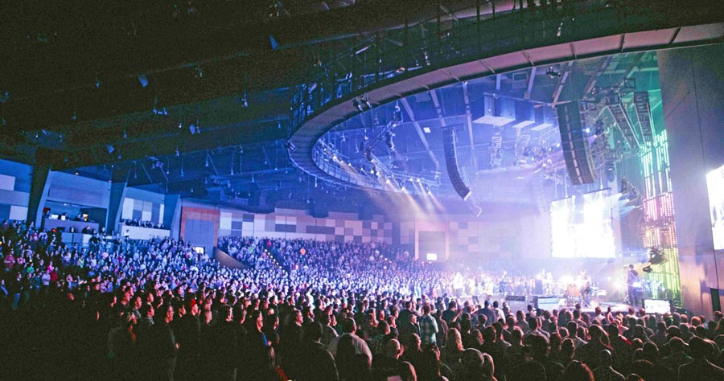
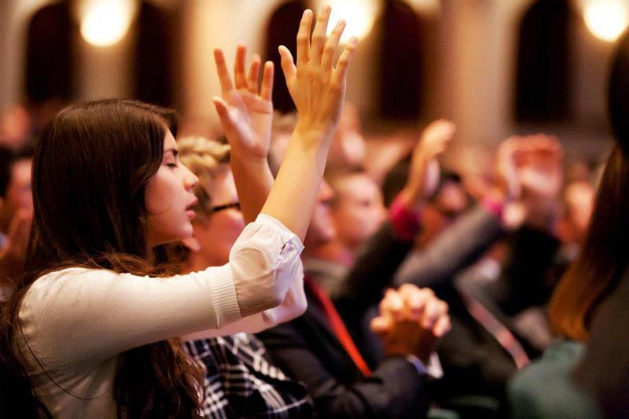

Turning the Worship of God into a Concert?
Three opinions on how not to turn a church service into "The Voice" show

Deanna Witkowski, a worship leader at a New York church, Monique M. Ingalls, professor of music at Baylor University, and C. Michael Hawn, professor of church music at Southern Methodist University, reflect on worship and on the tendency of ministers to perform rather than help the congregation praise God.
Source: hristiane.ru. Translated from Russian.
Listen. Trust. Improve. (Deanna Witkowski)
Quite recently I attended a most wonderful concert. I had not experienced anything like it for many years. A duo of guitarist and pianist from São Paulo (Brazil) was playing. They were performing together for the first time. These virtuosos (both of them also excellent composers and improvisers) listened to each other so attentively that the concert hall began to resemble a house of prayer. Would this music have suited a church service? Hardly. But I watched the performance and marvelled at how free it was of "egoism", of the urge to draw attention to oneself. The musicians were sensitive to the situation, trying to do more than simply make their own personal contribution to the performance, and sensitive to the people sitting in the hall. In response the hall answered with enthusiasm and attention. And the music became their shared experience. In our worship halls we often use the word "concert" with a negative shade, applying it to musicians and singers. But if the word liturgy means "common work", then in taking part in the liturgy every week, whether we are Baptists or Lutherans, should we not all labour to create worship?
I am a jazz musician. And to find my own voice I studied the great masters, the "saints" who came before me. Jazz and other musical styles where improvisation is developed can be a living example for the church. A jazz group is a kind of microcosm of "community" trying to create something greater than each of its separate parts. Every member of a jazz ensemble has opportunities both to play solo and to support another soloist with accompaniment. The musical accompaniment (or communication) is not prepared in advance. It arises in response to what the soloist is playing at that moment. And nothing will happen without listening attentively to one another. For a jazz ensemble to succeed, its members must trust one another. They need to trust the other musicians and to feel, as Julian of Norwich said, that "all shall be well". Jazz musicians do not always know what will be played a minute from now. But having sensitivity to their surroundings, good musical reflexes and the ability to create sound for the "edification" of the listener, they can serve as a kind of ideal for church musicians. Jazz harmonies can also bring out the text sung in the service.
As an arranger, I sometimes like to change the harmony of well-known hymns and accompany the congregational singing with my trio. Quite often members of the congregation come up to me after the service and say that because of the new arrangement the words of the hymn sounded in a new way. And that the way it was "played" (yes, yes, "played") also helped a great deal. And I am glad that my work helps the Holy Spirit speak to people's hearts, and to feel that I too am part of the body of Christ.

Remember God (C. Michael Hawn)
When it comes to the ministry of musical praise, the word "performance" carries a negative shade, and wrongly so: those involved in any aspect of public worship are in some sense "performing". No one wants worship leaders to be unprepared or careless. Practically any Christian can speak or pray in church, but only those who have musical "talent" are admitted to leading musical praise. And having such a talent can create a kind of "exclusion zone" between those who have it and those who do not. I have met people who said of themselves that they "have no talent" because they were not among the professional musicians. But that is not true. At the same time music is part of Christian worship and self-identity. Not all religious traditions include music, at least in our understanding of music. But most of Christian history, especially in the Middle Ages, is unthinkable without congregational singing during worship.
Those who help people sing during a service are least often accused of wanting to put on a "performance". Apparently it is those musicians whose gifts are used to highlight their professional skills as soloists or ensembles, without regard to the participation of the whole congregation in worship, who are accused of abusing the wish to "perform" during worship. This problem is not new. J. S. Bach was often accused of excessive "music-making" on the organ during services. The papal document of 1903, "Tra le Sollecitudini", called for abstaining from the "theatrical style" of music, which "is not entirely suited to the accompaniment of public worship".
The mindset of "performance" during worship depends mainly on the experience and expectations of individual participants in the service. For some, this very way of leading worship singing hinders their worship; for others it helps. Musical tastes also strongly affect the reaction of those who come to the gathering. There is one more aspect: the architecture of the worship space. The way the hall is arranged often makes worship leaders into performers rather than organisers of worship. The more technological extras there are (sound, light, screens), the more likely it is that someone will begin to accuse the musicians of crossing the line between leading worship and giving a concert.
The musical gifts of leaders are fit for worship as long as they keep a biblical approach and create a prayerful atmosphere of praise, worship, thanksgiving, confession, intercession, supplication and blessing, matching the words of the songs to the desires of the singers' hearts. Perhaps the motto "Soli Deo gloria" (To the glory of God alone), used by Bach, Handel and other musicians through the centuries, is a good start for any worship leader. Though worship leaders might modify this motto slightly by adding a few more words: "To the glory of God and for the worship of the gathered assembly of believers."

Do not be afraid to take musical risks (Monique M. Ingalls)
In the garden of Gethsemane Jesus asks the disciples to "watch and pray" while He struggles with the temptation to escape death on the cross. In 1 Peter 5:8 Christians are called to "be sober, be vigilant" in order to resist the evil surrounding them. This soberness and vigilance implies that we must pay attention not only to our inner spiritual state but also to the sound and social environment around us. Worship leaders and musicians cannot "not perform" during a service. However, we sink to "performance" when we combine leading the gathering in worship with the wish to entertain or win the approval of those standing in the hall.
To avoid this, we should change our perspective. Here is where to start. Watch what you say. Worship leaders and musicians should pay careful attention to the ways in which they address their listeners. After all, these ways are not limited to sung or spoken words. Our words will hang in emptiness if the way we have chosen to convey them says the opposite. What is the point of talking about the One we worship if all the congregation sees is the musicians' faces in the spotlight? What is the use of talking about the unity of believers across time and space if all our words are the copyright-controlled lyrics of hymns popular today? Stop trying to control everything. The wish to put on a "performance" persuades us to agree that the aesthetic quality of what happens is more important than the congregation's participation in worship.
Many services today are built on the urge to create a "perfect" sound which dominates rather than supports congregational singing. But congregational singing is much more than Sunday karaoke. It is a powerful, fundamental symbol of Christian life. Can the congregation take part in worship consciously if they cannot hear their own voice at all? Music leaders should constantly look for creative ways to give up total control over the sound, to help the voice of the gathering break through. Do not adapt yourselves. Performances often arise where leaders begin trying to match particular musical tastes and expectations.
We constantly follow the popular models of influential churches and the Christian media industry. There is a danger that our music and worship will follow the cult of popularity more than the local context. All the same, we should use songs, styles and words that serve the edification of our particular congregations. Take musical risks. Experiment. When you put yourself "on a diet" of one particular style of music, pop-rock, gospel or organ singing, it is very easy to rely on your own competence. Realising that the single musical style we have adopted is only one of a vast number of styles is truly liberating. In searching for new sources of inspiration, listen to the music of our historical heritage and to the musical traditions of different peoples. Going beyond the bounds of familiar styles enriches and widens our range of worship. It is much harder to turn worship into a concert if you are constantly learning and growing.
No Longer Slaves. Steffany Frizzell Gretzinger (Bethel Church)
 A Partner in God's Creativity. Alexander Men
A Partner in God's Creativity. Alexander Men The Actor from "Ushpizin" on His Search for Faith
The Actor from "Ushpizin" on His Search for Faith Jewish Images in the Work of the Catholic Artist Józef Regula
Jewish Images in the Work of the Catholic Artist Józef Regula